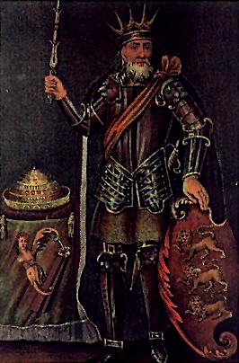

Ирландская история за последние два тысячелетия изучена весьма подробно, поэтому мы имеем достаточно точное представление о том, что тогда происходило. До прихода в страну христианства, много сказать о ней было нельзя: на острове было множество разрозненных языческих племён.
С приходом же Святого Патрика, принёсшего христианство, на остров пришло миролюбие и спокойствие, способствующее тому, что уже к VI веку Ирландия стала центром европейской культуры и учёности.
К VII веку Ирландия из-за различных факторов вошла в демографический кризис, из-за чего в последующие 200~ лет население не росло, но постепенно снижалось.
К X веку викинги начали совершать набеги на Ирландию, чем пошатнули мир и спокойствие на острове, в связи с чем пошатнулось и всё духовенство, которое было одно из ведущих в Европе.
Нельзя сказать, что набеги викингов на Ирландию принесли только плохое, потому что именно они основали на территории Ирландии два портовых города, Дублин и Лимерик, которые можно было назвать первыми и тем самым подарив в основном сельской Ирландии ее возможность к самостоятельной морской торговле. И хоть викинги и грабили монастыри, возле Дублина монастыри совершенно спокойно соседствовали с городом, основанным викингами и все еще оставались оплотом духовенства всей Европы.
В начале XI века под руководством короля Бриана Бору ирландцы изгнали викингов с острова, хотя сам король погиб в одной из решающих битв. Итогами вторжения викингов можно назвать основание одних из первых портовых городов Ирландии, полученную возможность морской торговли.
Из отрицательных итогов - уничтожение множества прибрежных и островных монастырей, что вызвало упадок духовенства в стране и лингвистическое влияние, выраженное заимствованными словами северного происхождения в судоходстве и связанных сферах.
